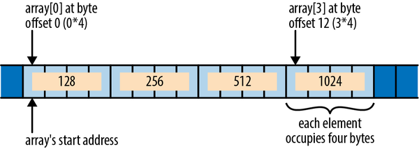
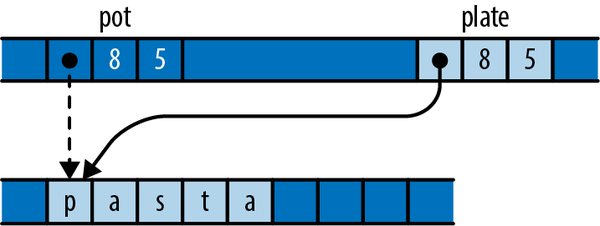
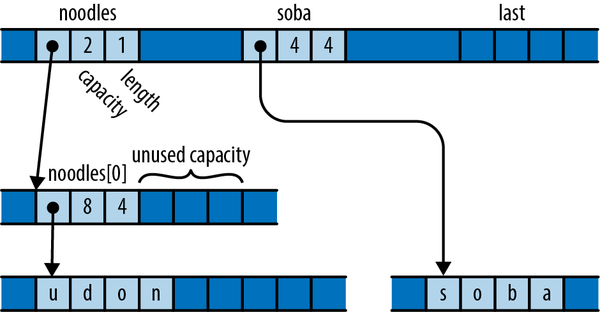
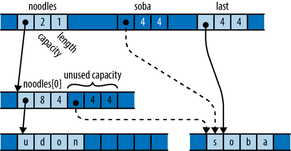
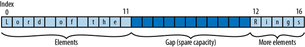

第 23 章 不安全的代码
欧里庇得斯，《美狄亚》
系统编程的奇妙之处在于，尽管每种安全语言都经过精心设计，各种抽象层次也都被精心构建，但实际上背后却隐藏着一片混乱不堪的机器语言与繁琐的位操作。当然，你也可以用 Rust 来编写这样的代码。
不安全代码允许你告诉 Rust：“我选择使用那些安全性无法保证的功能。”通过将一段代码标记为不安全，你就可以使用标准库中的函数，解引用未经处理的指针，以及调用用 C 和 C++等语言编写的函数。不过，Rust 的其他安全性检查仍然适用：类型检查、生命周期检查，以及对索引的限制检查等都会正常进行。所谓“不安全代码”，只是启用了一组额外的功能而已。
这种能够突破安全 Rust 框架限制的能力，使得我们可以在 Rust 语言中实现许多最基本的功能。就像 C 和 C++ 被用于构建自己的标准库一样，不安全代码使得 Vec 类型能够高效地管理缓冲区； std::io 模块可以与操作系统进行交互；而 std::thread 和 std::sync 模块则提供了并发处理的基础。
这一章介绍了使用不安全功能的基本要点：
-
当知道这些检查毫无必要，并且调用像
from_utf8_unchecked这样的不安全函数会损害性能时，却故意忽略这些检查。 -
绕过类型系统，以实现诸如将
&[u8]重新解释为&[u32]这样的操作。 -
请自行编写内存管理和并发相关的原语，比如
Vec和Arc，而无需依赖 Rust 的标准库。 -
使用先进的、针对 CPU 的指令，编译器的内嵌功能，以及其他编译器无法证明安全的特性。
-
将那些不安全的代码包装在安全的 API 中，这样既能让最终用户能够享受到你的工作的成果，也能确保不会违反 Rust 的安全保障。
不安全是因为什么？
在本书的开头，我们展示了一个 C 语言程序，该程序因为违反了 C 语言标准的规定而出现了意外崩溃。用 Rust 语言编写类似的程序也是可行的。
fnmain(){letmuta:usize=0;letptr=&rawmuta;unsafe{*ptr.add(4)=0x7ffff7d48a38;}}
运行这个程序后，也得到了同样令人惊讶的结果：
$cargobuildCompiling unsafe-samples v0.1.0Finished debug [unoptimized + debuginfo] target(s) in 0.44s$../../target/debug/crashcrash: Error: .netrc file is readable by others.crash: Remove password or make file unreadable by others.Segmentation fault (core dumped)$
该程序使用 &raw mut 运算符获取一个指向 *mut usize 类型变量的原始指针，该变量即为 a 。然后，通过 add 方法获取内存中更远的四个字处的指针。而 main 的返回地址就存储在这个位置。程序用一个常量覆盖了返回地址，从而使得从 main 返回时的行为变得异常。实际上，让程序发生崩溃的原因在于，程序错误地使用了一些不安全的功能——在本例中，就是无法正确解引用原始指针的行为。
一个不安全的特性是指那些违反了某种契约的规则：这些规则是 Rust 语言无法自动强制执行的，但为了避免未定义的行为，用户仍然必须遵循这些规则。
这个契约超越了常规的类型检查与生命周期检查，它还规定了针对那些不安全特性的额外规则。通常，Rust 本身并不了解这些契约的内容；这些规定只是体现在相关特性的文档中。例如，原始指针类型有一个契约，禁止对已经超出其原始引用对象末尾的指针进行解引用操作。在示例中，表达式 *ptr.add(3) = ... 就违反了这一契约。不过，正如日志所示，Rust 能够毫无问题地编译这个程序：它的安全检查并不会检测到这种违规行为。当你使用那些不安全的特性时，作为编程者的你必须负责确保自己的代码符合这些契约的要求。
许多功能都有使用规则，正确使用该功能是必须的。不过，这些规则并不属于我们所说的“契约”范畴，除非这些规则可能导致未定义的行为。所谓未定义行为，指的是 Rust 系统认为永远不会发生的行为，比如用其他内容覆盖函数调用的返回值地址。那些通过 Rust 常规安全检查，并且遵守了所有安全功能的代码，绝对不可能做出这种事。由于程序违反了原始指针的契约，其行为就是未定义的，从而偏离了正常的程序行为轨道。
你只能在 unsafe 块或 unsafe 函数中使用不安全的特性；我们将在后续章节中详细解释这两点。这样就能有效防止人们无意中使用不安全的特性：通过强制要求你使用 unsafe 块或函数，Rust 确保了你意识到自己的代码可能需要遵循一些额外的规则。
不安全的区块
一个 unsafe 块看起来和普通的 Rust 块没什么不同，只是前面有一个 unsafe 关键字。不同的是，在 unsafe 块中可以使用一些不安全的特性。
unsafe{String::from_utf8_unchecked(ascii)}
如果不在该代码块前使用 unsafe 关键字，Rust 会反对使用 from_utf8_unchecked ，而 from_utf8_unchecked 实际上是一个 unsafe 函数。用 unsafe 标记的代码块用于将那些可能引发未定义行为的代码分离出来，以便进行更仔细的审查。少量的不安全代码可以通过安全的接口来包装，从而在不担心引发未定义行为的情况下使用这些代码，相比到处使用 unsafe 来说，这种方式在节省时间和精力的同时也能保证代码的可靠性。
就像一个普通的 Rust 变量一样， unsafe 变量的值取决于其最终表达式的值；如果它没有最终表达式，那么其值就等于 () 。在示例中，对 String::from_utf8_unchecked 的调用实际上就是获取该变量的值。
一个 unsafe 块为你提供了另外五个选择：
-
你可以调用
unsafe这些函数。每个unsafe函数都需要根据其用途来指定自己的合约。 -
你可以对原始指针进行解引用操作。安全代码可以传递原始指针，比较它们，并通过从引用类型转换或甚至从整数类型转换来创建新的指针。但实际上，只有不安全的代码才会实际使用这些指针来访问内存。我们将在“原始指针”这一章节中详细讨论原始指针，并说明如何安全地使用它们。 -
你可以访问union对象的字段，不过这些字段并不安全，因为与enum对象不同，编译器无法确保这些字段所包含的数据符合相应类型的有效位模式。 -
你可以访问可变的变量。如“全局变量”部分所解释的，Rust 无法确定线程是否在使用可变的变量，因此相关的契约要求你必须确保所有访问操作都进行了适当的同步处理。 -
你可以通过 Rust 的外部函数接口访问那些通过 Rust 语言声明的函数和变量。即使这些变量是不可变的，它们仍然可以被其他语言编写的代码访问，因为其他语言可能不遵守 Rust 的安全性规则。
将不安全的功能限制在 unsafe 块内实际上并不能真正阻止你做其他事情。完全可以将 unsafe 块插入到代码中而不影响程序的正常运行。这条规则的优点在于能够提醒人们注意那些由 Rust 无法保证安全的代码。
-
你不会不小心使用那些不安全的功能，然后才发现自己竟然要负责那些自己根本不知道存在的合同事务。
-
unsafe块会吸引更多评审者的注意力。有些项目甚至配备了自动化工具来确保这一点，能够标记出那些会影响unsafe块的代码变更，以便给予特别关注。 -
在考虑编写
unsafe块时，不妨花点时间思考一下：你的任务是否真的需要采用这种优化措施。如果是为了提高性能，你是否有数据来证明这确实是一个性能瓶颈？或许可以用更安全的 Rust 语言来实现同样的功能。
示例：一种高效的 ASCII 字符串类型
这是 Ascii 的定义，它是一种字符串类型，其内容始终为有效的 ASCII 字符。该类型使用了一种不安全的特性，可以以零成本将其转换为 String 格式。
modmy_ascii{/// An ASCII-encoded string.#[derive(Debug, Eq, PartialEq)]pubstructAscii(// This must hold only well-formed ASCII text:// bytes from `0` to `0x7f`.Vec<u8>,);implAscii{/// Creates an `Ascii` from the ASCII text in `bytes`. Returns a/// `NotAsciiError` error if `bytes` contains any non-ASCII/// characters.pubfnfrom_bytes(bytes:Vec<u8>)->Result<Ascii,NotAsciiError>{ifbytes.iter().any(|&byte|!byte.is_ascii()){returnErr(NotAsciiError(bytes));}Ok(Ascii(bytes))}}// When conversion fails, we give back the vector we couldn't convert.// This should implement `std::error::Error`; omitted for brevity.#[derive(Debug, Eq, PartialEq)]pubstructNotAsciiError(pubVec<u8>);// Safe, efficient conversion, implemented using unsafe code.implFrom<Ascii>forString{fnfrom(ascii:Ascii)->String{// SAFETY: This module enforces the invariant that `ascii.0`// is ASCII, and all ASCII text is well-formed UTF-8.unsafe{String::from_utf8_unchecked(ascii.0)}}}...}
这个模块的关键在于 Ascii 类型的定义。该类型被标记为 pub ，以便可以在 my_ascii 模块之外使用。但是该类型的 Vec<u8> 元素并不是公开的，因此只有 my_ascii 模块才能创建 Ascii 值或引用其元素。这样一来，模块的代码就可以完全控制其中可以包含什么内容。只要公开的构造函数和方法确保新创建的 Ascii 值始终符合格式要求，那么程序的其余部分就不会违反这一规则。实际上，公开的构造函数 Ascii::from_bytes 在同意创建 Ascii 之前，会仔细检查所接收的向量。为了简洁起见，我们没有展示任何方法，但你可以想象有一些处理文本的方法，确保 Ascii 值始终包含正确的 ASCII 文本；就像 String 模块的方法确保其内容始终为正确的 UTF-8 格式一样。
这种布局使我们能够非常高效地实现 From<Ascii> 对 String 的调用。那个不安全的函数 String::from_utf8_unchecked 接收一个字节向量，并从中构建出一个 String 结构，而无需检查其内容是否构成格式正确的 UTF-8 文本；该函数的契约要求调用者必须负责确保这一点。幸运的是， Ascii 类型所实施的规则正是满足 from_utf8_unchecked 契约所需要的。正如我们在“UTF-8”中所述，任何 ASCII 文本块也属于格式正确的 UTF-8 文本，因此 Ascii 所依赖的 Vec<u8> 结构可以直接用作 String 的缓冲区。
不过，我们按照惯例，在 from 方法中标记了 unsafe 这个代码块，并添加了 // SAFETY: 注释，以说明为什么我们认为这种不安全的代码使用方式是正确的。
有了上述定义之后，我们可以来尝试一下 Ascii 字符串类型了：
usemy_ascii::Ascii;letbytes:Vec<u8>=b"ASCII and ye shall receive".to_vec();// This call entails no allocation or text copies, just a scan.letascii:Ascii=Ascii::from_bytes(bytes).unwrap();// We know these chosen bytes are ok.// This call is zero-cost: no allocation, copies, or scans.letstring=String::from(ascii);assert_eq!(string,"ASCII and ye shall receive");
Ascii 只不过是一个包裹在 Vec<u8> 之外的包装器而已，它隐藏在一个模块中，该模块对其内容有额外的约束规则。这种类型被称为“新类型”，这是 Rust 中的一种常见模式。Rust 中的 String 类型也是以相同的方式定义的，只不过它的内容被限制为 UTF-8 编码，而不是 ASCII 编码。实际上，这是标准库中对 String 的定义：
pubstructString{vec:Vec<u8>,}
这种模式将不安全操作隐藏在看似安全的接口之下，正是这种机制使得大多数 Rust 程序能够在仍然进行内存分配、与文件系统接口交互等操作时，完全避免遇到 unsafe 问题。这种机制通常非常高效；在机器层面，由于 Rust 的类型系统的作用，新类型及其元素在内存中的表示方式是相同的，因此构建新类型并不需要任何机器指令。在 Ascii::from_bytes 中，表达式 Ascii(bytes) 只是将 Vec<u8> 的表示方式改为存储 Ascii 值而已。同样地， String::from_utf8_unchecked 在内联处理时可能也不需要任何机器指令：此时 Vec<u8> 被视为 String 。
不安全的函数
一个 unsafe 函数定义看起来就像是一个普通的函数定义，只不过前面加了一个 unsafe 关键字。
例如，这是我们之前引入的一种新的构造函数，它用于从字节向量中创建一个 Ascii 类型对象，而无需检查该字节向量中的内容是否都是有效的 ASCII 字符。
// This must be placed inside the `my_ascii` module.implAscii{/// Constructs an `Ascii` value from `bytes`, without checking/// whether `bytes` actually contains well-formed ASCII.////// This constructor is infallible, and returns an `Ascii` directly,/// rather than a `Result<Ascii, NotAsciiError>` as the `from_bytes`/// constructor does.////// # Safety////// The caller must ensure that `bytes` contains only ASCII/// characters: bytes no greater than 0x7f. Otherwise, the effect is/// undefined.pubunsafefnfrom_bytes_unchecked(bytes:Vec<u8>)->Ascii{Ascii(bytes)}}
显然，调用 Ascii::from_bytes_unchecked 的代码已经知道，手头处理的向量中只包含 ASCII 字符。因此， Ascii::from_bytes 所执行的检查其实是无用的，调用者需要编写代码来处理 Err 可能出现的未知情况。而 Ascii::from_bytes_unchecked 则允许这样的调用者跳过这些检查以及错误处理过程。
不过，之前我们强调了 Ascii 的公共构造函数和方法的重要性，这些函数需要确保 Ascii 的值格式正确。那么 from_bytes_unchecked 难道没有履行这一责任吗？
真的可以通过违反 Ascii::from_bytes_unchecked 的契约来引发未定义的行为吗？是的。你可以构造一个 String ，其中包含了格式错误的 UTF-8 字符。
// Imagine that this vector is the result of some complicated process// that we expected to produce ASCII. Something went wrong!letbytes=vec![0xf7,0xbf,0xbf,0xbf];letascii=unsafe{// This unsafe function's contract is violated// when `bytes` holds non-ASCII bytes.Ascii::from_bytes_unchecked(bytes)};letbogus:String=ascii.into();// `bogus` now holds ill-formed UTF-8. Parsing its first character produces// a `char` that is not a valid Unicode code point. That's undefined// behavior, so the language doesn't say how this assertion should behave.assert_eq!(bogus.chars().next().unwrap()asu32,0x1fffff);
实际上，标准库中的 chars 迭代器包含了一个仅用于调试的检查机制，能够检测那些未定义的行为，并在发现这种情况时终止当前进程。
thread 'bad_ascii' panicked at rust/library/core/src/char/methods.rs:239:18:unsafe precondition(s) violated: invalid value for `char`This indicates a bug in the program. This Undefined Behavior check is optional,and cannot be relied on for safety.thread caused non-unwinding panic. aborting.
在发布版本中，这类检查功能是被禁用的，目的是为了提升性能。此外，某些未定义的行为根本不会受到运行时检查的约束。在这种情况下，产生的后果真的难以预测。在 Rust 的一个版本中，这个例子产生了如下有趣的错误信息：
thread 'main' panicked at 'assertion failed: `(left == right)`left: `2097151`,right: `2097151`', src/main.rs:42:5
那两个数字看起来似乎相等，但这并不是 Rust 的缺陷；这是之前那个 unsafe 块的问题导致的。当我们说“未定义行为会导致不可预测的结果”时，指的就是这种情况。
这揭示了关于漏洞和不安全代码的两个重要事实：
-
在unsafe块之前出现的错误可能会破坏契约。而unsafe块是否会导致未定义的行为，不仅仅取决于该块中的代码，还取决于为其提供值的代码。你的unsafe代码所依赖的所有内容，都是至关重要的安全因素。只有当模块的其余部分能够正确地维护Ascii的不变量时，基于Ascii到String的转换才是有意义的。 -
违反合同所带来的后果可能会在你离开unsafe块之后才显现出来。由于未能遵守某个不安全特性的契约规定而引发的不可预知行为，往往不会在unsafe块中立即出现。像之前那样构造一个虚假的String，可能在程序执行到相当长时间之后才会引发问题。
本质上，Rust 的类型检查器、借用检查器以及其他静态检查功能都在对程序进行验证，试图证明该程序不会表现出未定义的行为。当 Rust 成功编译你的程序时，就意味着你的代码是安全的。不过， unsafe 这一块中的内容就是这种验证的缺失之处：“这段代码，”你向 Rust 传达的是，“是安全的，相信我吧。”你的判断是否正确，可能取决于程序中那些会影响 unsafe 这一块行为的部分，而犯错所带来的后果则可能出现在受 unsafe 这一块影响的任何地方。使用 unsafe 这个关键字，其实是在提醒你，你并没有完全享受到语言提供的安全检查所带来的好处。
不幸的是，在实际使用中经常会遇到一些不安全的函数，它们的文档并没有详细说明它们的行为规则。用户通常需要根据自身的经验和对代码行为的了解来自行推断这些规则。如果你曾经对使用 C 或 C++ API 的行为是否合规感到困惑，那么你就明白这种感觉了。
标记不安全的代码
在大多数情况下，Rust 编译器都乐于提供指导建议。不过，关于是否应该给某个函数加上 unsafe 标记这个问题，Rust 并没有明确的说明。通常，你可以删除 unsafe fn 中的 unsafe 标记，而不会出现任何警告。而当使用不安全代码时，就需要你正确地对函数进行分类了。
-
如果该函数可以被滥用，导致程序在编译时表现良好，但却会产生未定义的行为，那么就必须将其标记为不安全的函数。正确使用该函数的规则就是遵循其契约；只要存在契约问题，那么该函数就被视为不安全的。
-
否则，这个函数就是安全的：任何类型正确的调用都不会导致未定义的行为。因此，不应该对这个函数进行标记
unsafe。
无论该函数是否使用了一些不安全的特性，都不重要；重要的是是否存在契约约束。之前，我们展示了一个不使用任何不安全特性的不安全函数，以及一个使用了一些不安全特性的安全函数。
在函数中添加标记 unsafe 意味着你提供了一种危险的工具。文档中应该有一个 # Safety 部分来说明如何正确使用它。而使用 unsafe 块则意味着你正在使用危险的工具，最好再加上 // SAFETY: 注释来解释为什么这种使用方式是正确的。这两者是不同的提示信息。有时候，两种提示都是必要的，所以即使在 unsafe fn 的情况下，也将不安全的代码包装在 unsafe 块中也是合理的。如果不这样做，Rust 会发出警告。你可以使用 #![deny(unsafe_op_in_unsafe_fn)] 在你的 crate 根目录下将警告升级为错误。
未定义行为
在引言部分，我们提到“未定义行为”这一术语指的是那些 Rust 语言认为永远不会发生的行为。不过，根据我们使用其他语言的经验，我们明白这种行为其实经常会发生，只是偶然而已。编译器的开发者也明白这一点，但他们选择设定一些边界来限制编译器预期会发生的行为，这样就能生成更高效的代码。
编译器是一种将一种编程语言代码转换为另一种编程语言的工具。Rust 编译器会将一个 Rust 程序翻译成等效的机器语言程序；也就是说，这个机器语言程序在运行时具有与原始 Rust 程序相同的表现，能够执行相同的系统调用，并且能够以类似的方式与外部库进行交互。这有点像程序版的图灵测试：如果你无法判断自己是在与原始程序还是翻译后的程序进行交互，那么说明这两个程序是等效的。
像 rustc 这样的优化编译器通过逐步修改代码来实现其功能。在每一个步骤中，编译器都试图以合理的方式改变程序的运行行为（比如让程序运行得更快或占用更少的内存），而不会引入错误。
让我们来看一个这个过程出现问题的例子。请参考以下代码：
leti=10;very_trustworthy(&i);println!("{}",i*100);
即使我们对 very_trustworthy 的定义一无所知，我们也可以看出，它只接收了对 i 的共享引用。因此，调用操作无法改变 i 的值。由于传递给 println! 的值始终为 1000 ，所以 Rust 可以将这段代码翻译成机器语言，就好像我们真的写了这样的代码一样：
very_trustworthy(&10);println!("{}",1000);
这个经过修改的版本在可见行为上与原始版本相同，而且可能还会稍微快一些。不过，只有当我们认为这个版本的语义与原始版本一致时，才需要考虑其性能表现。如果 very_trustworthy 的定义如下会怎样呢？
// This function takes a non-mut reference...fnvery_trustworthy(shared:&i32){unsafe{// ... and breaks the rules by turning it into a mut reference// via pointers. This is undefined behavior.letmutable=sharedas*consti32as*muti32;*mutable=20;}}
这段代码违反了共享引用的规则：它改变了 i 的值，将其改为 20 ，而实际上由于 i 是共享引用，这个值应该被冻结起来。不过，Rust 足够智能，能够发现这种不合理的做法，并且默认情况下会拒绝编译这样的代码。但是，Rust 无法检测到所有不安全的代码中的规则违反行为。如果 Rust 无法发现这个问题，而只是像往常一样编译这段代码，那么结果将会非常糟糕：如果我们对调用者进行了这样的修改，程序将会输出 1000 的值；但如果 Rust 不干预代码，而直接使用 i 的新值，那么程序就会输出 2000 的值。在 very_trustworthy 中打破共享引用的规则意味着，共享引用在调用者中的行为将不再符合预期。
这种问题几乎会在 Rust 语言所实现的每一种转换中出现。即使是将一个函数内联到其调用点，也意味着在被调用函数执行完毕后，控制流会返回到调用点。但实际上，我们开篇所举的例子就表明，即使是在这种情况下，代码仍然可能存在问题。
以下是 Rust 对于编写行为良好的程序的规则：
-
该程序不得读取未初始化的内存数据。
-
该程序不得生成无效的原始类型值：
- 引用、框或
fn指针，它们指向的是null bool这些值既不是0也不是1enum有一些值的判别式无效char无效的数值，非替代 Unicode 代码点str这些格式不规范的 UTF-8 字符- 指针数值过大，而虚拟表结构或切片长度又不符合规范
- 对于那些不返回值的函数来说，任何形如
!这样的“never”类型的值都适用。
- 引用、框或
-
第 5 章中阐述的引用规则必须得到遵守。任何引用都不应超过其被引用对象的生命周期；共享访问只能是只读访问；而可修改访问则必须是独占访问。 -
该程序不得处理指向空指针、对齐错误的指针或已失效的指针。 -
该程序不得使用指针来访问与指针所关联的内存区域之外的数据。我们将在“如何安全地重新引用原始指针”这一章节中详细解释这条规则。 -
该程序必须避免数据竞争的情况发生。数据竞争发生在两个线程在没有同步机制的情况下访问同一内存位置时，且至少有一个访问操作是写操作。
-
该程序不得通过外语函数接口，从用其他语言编写的调用中重新执行。有关详细信息，请参考“反序执行”部分。 -
如果该程序使用了任何
unsafe标准库功能，那么它必须遵循相关协议的规定。
任何违反这些规则的行为都属于不规范行为，从而让 Rust 优化程序并将其转换为机器语言的努力失去可信度。如果你违反了最后一条规则，将格式不正确的 UTF-8 数据传递给 String::from_utf8_unchecked ，那么或许 2097151 和 2097151 终究并不相等。
在 C 语言和 C++语言中，如果程序能够毫无错误地编译完成，那就意味着问题不大了。正如我们在本书的引言部分提到的那样，即使是由那些备受推崇、且遵循严格编码规范的项目编写出的最优秀的 C 和 C++程序，在实际使用中也可能出现未定义行为。
不安全的特质
“不安全特征”指的是那些存在某种契约特性的特征，而 Rust 语言无法检查或强制执行这些特性，因此实现此类特征时，必须确保实现者满足这些契约条件，才能避免产生未定义的行为。要实现一个“不安全特征”，你需要将相关实现标记为“不安全”状态。你需要理解该特征的契约要求，并确保你的类型满足这些要求。
std::marker::Send 和 std::marker::Sync 是典型的不安全特性的例子。这些特性并没有定义任何方法，因此对于任何你喜欢的类型来说，实现它们都是非常简单的。但是它们有一些约束条件： Send 要求实现者能够安全地切换到另一个线程中，而 Sync 则要求实现者能够在多个线程之间通过共享引用来安全地共享数据。例如，如果为一个不合适的类型实现 Send 特性，那么 std::sync::Mutex 就可能无法在避免数据竞争的情况下使用。
bytemuck 模块为“普通数据”类型提供了一些额外的功能——也就是说，对于那些没有复杂初始化和验证要求的类型而言。这部分功能是通过一个名为 Zeroable 的特质来实现的，该特质允许通过将所有字节设置为零来安全地初始化这些类型。显然，对 usize 类型进行清零操作是可行的，但對 &T 类型进行清零操作会返回一个空引用，导致在解引用时程序崩溃。对于 Zeroable 类型，则可以进行一些优化：可以使用 write_bytes 方法快速初始化它们组成的数组（相当于 Rust 中的 memset 操作），或者利用操作系统提供的函数来分配已清零的内存块。
像大多数标记性状一样，实现 Zeroable 并不需要编写任何方法：
unsafeimplZeroableforu8{}unsafeimplZeroablefori32{}unsafeimplZeroableforusize{}// and so on for all the integer types
有了这些定义之后，我们就可以编写一个函数，该函数能够快速分配一个给定长度的向量，其中向量中的元素类型为 Zeroable ：
usebytemuck::Zeroable;fnzeroed_vector<T>(len:usize)->Vec<T>whereT:Zeroable,{letmutvec=Vec::<T>::with_capacity(len);// SAFETY: Writing to the spare capacity of vec is safe. Once we've// initialized the storage with valid T values, set_len is OK.// We know zero bytes make valid values because T is Zeroable.unsafe{vec.as_mut_ptr().write_bytes(0,len);vec.set_len(len);}vec}
该函数首先创建一个容量为所需值的空 Vec 对象。然后，它获取一个指向空闲缓冲区的 *mut T 类型的指针，并调用该指针的 write_bytes 方法来用零值填充该缓冲区。（ write_bytes 方法将 len 视为 T 个元素的数量，而不是字节数；因此这次调用确实会填充整个缓冲区。）向量的 set_len 方法可以修改其长度，而无需对缓冲区进行任何操作；不过这样做并不安全，因为必须确保新分配的缓冲区空间确实包含了类型 T 的已初始化值。但 T: Zeroable 所指向的内容正是这样的：一组零字节就代表了一个有效的 T 值。我们使用 set_len 也是安全的。
在这里，我们实际应用了这一方法：
letv:Vec<usize>=zeroed_vector(100_000);assert!(v.iter().all(|&u|u==0));
显然， Zeroable 一定是一种不安全的特性。因为如果一个实现不符合其契约要求，就可能会导致不可预知的行为。
structHoldsRef<'a>(&'amuti32);unsafeimpl<'a>ZeroableforHoldsRef<'a>{}letmutv:Vec<HoldsRef>=zeroed_vector(1);*v[0].0=1;// crashes: dereferences null pointer
Rust 并不明白 Zeroable 这个符号的含义，因此无法判断其是否应用于不合适的类型。和其他不安全的特性一样，理解并遵守不安全特性的约束条件取决于你自身。
请注意，不安全的代码绝不能依赖于那些被正确实现的常规安全特性。例如，假设有一个 std::hash::Hasher 特性的实现，它只是返回一个随机的哈希值，而这个值与需要哈希的数据没有任何关系。这个特性要求对相同的比特位进行两次哈希运算时，必须得到相同的哈希值，但这样的实现不符合这一要求，因此是错误的。不过，由于 Hasher 不是一个不安全的特性，所以在不安全的代码中使用这个哈希器时，不应该出现未定义的行为。 std::collections::HashMap 类型被精心设计，以遵守其使用的不安全特性的契约，而不管哈希器的行为如何。当然，这个表将无法正常工作：查找将会失败，数据项会随机出现或消失。但是，这个表不会表现出未定义的行为。
原始指针
在 Rust 中，原始指针是一种无约束的指针。你可以利用原始指针来构建各种结构，而这些结构是 Rust 的受限制指针类型所无法实现的，比如双向链表或任意对象的图结构。不过，由于原始指针的灵活性很强，Rust 无法判断你是否正确地使用了它们。因此，你只能在一个 unsafe 块中才能解引用这些原始指针。
原始指针相当于 C 语言或 C++语言中的指针，因此它们在与这些语言编写的代码中交互时也很有用。
有两种原始指针：
-
*mut T是一个对T的原始指针，可以修改其指向的对象。 -
*const T是一个对T的原始指针，它仅允许读取其指向的对象。
你可以使用 &raw const 或 &raw mut 来创建原始指针，也可以使用 & 和 &mut 这两个指针版本；或者通过将其转换为相应的引用类型来实现。要解引用原始指针，可以使用 * 运算符。
letmutx=10;letptr_x=&rawmutx;// using the `&raw mut` operatorlety=Box::new(20);letptr_y:*consti32=&*y;// using conversionunsafe{*ptr_x+=*ptr_y;}assert_eq!(x,30);
与盒式存储器和引用不同，原始指针可以是空的。在 C 语言中就是这样的例子，比如 NULL ；在 C++中则是 nullptr 。
fnoption_to_raw<T>(opt:Option<&T>)->*constT{matchopt{None=>std::ptr::null(),Some(r)=>ras*constT,}}assert!(!option_to_raw(Some(&("pea","pod"))).is_null());assert_eq!(option_to_raw::<i32>(None),std::ptr::null());
指向动态大小类型的原始指针被称为“胖指针”，就像相应的引用类型 Box 一样。 *const [u8] 指针除了包含地址之外，还包含长度信息；而 *mut dyn Write 指针则包含指向 vtable 的指针。
虽然 Rust 在不同情况下会隐式地解引用安全指针类型，但直接解引用原始指针则必须显式进行：
-
.运算符不会自动解引用原始指针；你必须使用(*raw).field或(*raw).method(...)来进行操作。 -
原始指针并不实现Deref的功能，因此那些强制解引用操作并不适用于它们。 -
像==和<这样的操作符将原始指针视为地址进行比对：如果两个原始指针指向内存中的同一个位置，那么它们就被视为相等。同样地，对原始指针进行哈希运算时，实际上是对它指向的地址进行哈希处理，而不是对其所指的值进行哈希运算。 -
像std::fmt::Display这样的格式化标记会自动跟随引用对象，但完全不处理原始指针。不过，std::fmt::Debug和std::fmt::Pointer这两种标记可以显示原始指针作为十六进制地址，而无需进行解引用操作。
as 运算符允许进行几乎所有的引用到原始指针的转换，以及不同原始指针类型之间的转换。不过，有时候需要将复杂的转换分解为一系列简单的步骤。例如：
&vec![42_u8]as*constString;// error: invalid conversion&vec![42_u8]as*constVec<u8>as*constString;// permitted
在执行此操作时必须非常小心：通过这种方式生成的引用具有无限制的生命周期，因为没有任何限制来规定其存活的时间长度——由于只是使用了原始指针，因此 Rust 系统无法基于任何约束来做出决策。在《为 libgit2 提供安全的接口》一文中，我们展示了几种正确限制生命周期的方法。
许多类型都拥有 as_ptr 和 as_mut_ptr 方法，这些方法返回指向其内容的原始指针。例如，数组切片和字符串返回的是指向其第一个元素的指针。像 Box 、 Rc 和 Arc 这样的指针类型，拥有 into_raw 和 from_raw 方法，可以用来将原始指针转换为这些类型。不过，其中一些方法的接口有一些令人惊讶的要求，因此在使用之前请务必查阅它们的文档。
你也可以通过将整数转换为指针来创建原始指针。不过，用于这种转换的整数，通常应该是那些最初从指针中获得的整数。
原始指针既不是 Send ，也不是 Sync 。在 Rust 中，除非明确实现了 Send 和/或 Sync 功能，否则包含原始指针的类型并不具备线程安全性。关于这一点，可以参考“不安全特性”部分的相关说明。
安全地重新引用原始指针
以下是一些用于安全使用原始指针的实用指南：
-
引用空指针或指向错误的指针是一种未定义的行为。
-
如果指向了那些与其类型不匹配的指针，那么这种行为会被视为未定义的行为。
-
读取未初始化的内存始终属于未定义的行为。如果
*ptr的类型包含析构函数，那么对未初始化的内存*ptr = value进行赋值也会产生未定义的行为。不过，我们可以使用ptr.write(value)来安全地初始化内存，这一点我们在本章后面会进一步讨论。 -
只有遵循第 5 章中所述的引用安全规则，才能通过从未解指的原始指针来借用值。这些规则包括：没有任何引用可以超过其被引用对象的生命周期；共享访问只能是只读访问；可修改访问必须是独占访问。（由于原始指针常用于创建具有非标准共享或所有权机制的数据结构，因此很容易意外违反这些规则。） -
只有当原始指针所指向的值确实是该类型的一个有效值时，才可以使用它。例如，在解引用
*const char时，必须确保得到的 Unicode 代码点是正确的、非替代字符的。 -
如果你将内存分配的对象指向某个原始指针，那么不得违反该对象所属的任何类型的不变量约束。例如，如果有一个
*mut u8指向了String中的一个字节，那么你在u8中存储的值必须确保String仍然持有格式正确的 UTF-8 编码数据。 -
指针的
add和sub方法只能用于创建指向同一变量或堆分配内存中的新指针，或者指向超出分配范围的一字节位置。如果超出分配范围，则会导致不可预知的行为。（这正是我们在本章开头的示例中所违反的规则。我们稍后会详细讨论add方法，并展示如何合理地使用它。） -
同样，如果你通过先将指针转换为整数来进行指针运算，然后再对整数进行运算，最后再将结果转换回指针，那么结果所指向的地址必须仍然指向同一个内存分配单元。如果不符合这个条件，那么对指针所指向的地址进行解引用操作将会导致未定义的行为。
这些规则本质上与在 C 语言或 C++中使用指针时所需的规则相同；而在 Rust 语言中，当你使用引用时，也会自动执行同样的规则。
关于原始指针的完整、准确的合同条款并不容易表述，而且随着语言的演变，这些条款可能会发生变化。不过，这里概述的原则应该能够确保你在安全的环境中操作。
示例：使用 RefWithFlag
以下是一个示例，展示了如何将一个经典的 1 位级操作技巧，通过原始指针实现，并将其转化为一种完全安全的 Rust 类型。这个模块定义了一个类型 RefWithFlag<'a, T> ，它能够同时存储 &'a T 和 bool 两个值，类似于元组 (&'a T, bool) 的功能，但却只占用一个机器字的空间，而不是两个。这种技术在垃圾回收器和虚拟机中经常被使用，因为在那些场景中，某些类型的数量非常庞大，如果为每个值都分配一个额外的字，将会显著增加内存占用。
modref_with_flag{usestd::marker::PhantomData;/// A `&T` and a `bool`, wrapped up in a single word./// The type `T` must require at least two-byte alignment.////// If you're the kind of programmer who's never met a pointer whose/// 2⁰-bit you didn't want to steal, well, now you can do it safely!/// ("But it's not nearly as exciting this way...")pubstructRefWithFlag<'a,T>{ptr_and_bit:*constT,behaves_like:PhantomData<&'aT>,// occupies no space}impl<'a,T:'a>RefWithFlag<'a,T>{pubfnnew(ptr:&'aT,flag:bool)->Self{const{assert!(align_of::<T>().is_multiple_of(2));}letptr=ptras*constT;RefWithFlag{ptr_and_bit:ptr.map_addr(|addr|addr|flagasusize),behaves_like:PhantomData,}}pubfnget_ref(&self)->&'aT{letptr=self.ptr_and_bit.map_addr(|addr|addr&!1);// SAFETY: We have just recreated the original `ptr` from the constructor.// Now we will reborrow the original reference. We know the value is still// there, since the original reference had lifetime 'a, and borrows// prevent moves and drops. (We know 'a hasn't expired; Rust ensures that// no lifetime in scope is ever expired. It's an error to call this// method on `self` after the 'a in its type expires.)unsafe{&*ptr}}pubfnget_flag(&self)->bool{self.ptr_and_bit.addr()&1!=0}}}
这段代码的巧妙之处在于：许多类型必须被放置在内存的偶数地址上。因为偶数地址的最低位始终为 0，所以我们可以在那个位置存储其他数据，然后通过屏蔽掉最低位来可靠地还原原始地址。不过，并非所有类型都符合这一要求；例如，类型 u8 和 (bool, [i8; 2]) 就可以放置在任何地址上。但在构建数据结构时，我们可以检查类型的对齐情况，从而排除那些无法使用的类型。
你可以这样使用 RefWithFlag ：
useref_with_flag::RefWithFlag;letvec=vec![10,20,30];letflagged=RefWithFlag::new(&vec,true);assert_eq!(flagged.get_ref()[1],20);assert_eq!(flagged.get_flag(),true);
该构造函数 RefWithFlag::new 接受一个引用和一个 bool 值作为输入。首先，它断言类型 T 确实需要对齐，使其地址为偶数。围绕这一断言的 const 代码块确保这一判断在编译时就能得到执行，因此如果错误地使用 RefWithFlag ，将会引发编译错误，而不是运行时异常。一旦确认类型没有问题后，构造函数会将引用转换为原始指针，然后使用 map_addr 和 | 位或运算符，将 flag 的整数值加到指针所指向的地址上。
get_flag 方法用于提取 RefWithFlag 中的 bool 组件。其原理很简单：只需屏蔽地址的最低位，然后判断该位是否非零即可。
get_ref 方法从 RefWithFlag 中提取引用。首先，它再次使用 map_addr 方法来屏蔽 usize 的低位比特，从而恢复原始的指针值。 as 运算符不会将原始指针转换为引用，但我们可以将原始指针解引用（自然地在 unsafe 块中完成）。解引用原始指针的引用对象后，就会得到一个具有无限制生命周期的引用：Rust 会为这个引用分配一个合适的生命周期，只要周围有相关的代码需要检查即可。不过，通常会有更精确的生命周期参数，这样能避免更多的错误。在这种情况下，由于 get_ref 的返回类型就是 &'a T ，所以 Rust 认为这个引用的生命周期与 RefWithFlag 的生命周期参数 'a 相同，这正是我们想要的——也就是我们最初使用的引用的生命周期。
这些方法使用 addr 来获取指针的地址，作为 usize 和 map_addr 来修改它。这些方法是 Rust 严格指针溯源系统的一部分，该系统能够追踪指针是在何时、何地以及以何种方式被创建和使用的。通常，这种追踪是在编译阶段完成的，这为 Rust 提供了更多用于优化程序的信息。不过，一些新的 CPU 和操作系统可以在运行时利用这些信息来确保程序对内存的访问方式符合相关约束条件。关于这一机制的具体实现方式，目前正成为像 CheriABI 这样的项目中的研究热点。
在 RefWithFlag 中，我们所做的只是修改了一个来自指针的地址。因此，使用 map_addr 就足够了，因为它能够将修改后的地址与原始指针的出处信息关联起来。如果你需要使用 as *const T 或类似的方法从整数创建一个指针，那么你就需要使用更不明确的暴露式出处机制了。
在内存中， RefWithFlag 看起来就像 usize ：由于 PhantomData 是一个零大小的类型，所以 behaves_like 字段在结构中不会占用任何空间。但是 PhantomData 是必需的，因为 Rust 需要它来处理使用 RefWithFlag 的代码的生命周期问题。想象一下，如果没有 behaves_like 字段，类型会是什么样子：
// This won't compile.pubstructRefWithFlag<'a,T:'a>{ptr_and_bit:*constT,}
在第五章中，我们指出，任何包含引用的结构都不得使其引用的对象的生命周期超过自身结构的生命周期，否则这些引用就会变成“悬空指针”。该结构必须遵守适用于其字段的约束条件。这一点显然适用于 RefWithFlag ：在我们刚刚看到的例子中， flagged 不得超过 vec 的生命周期，因为 flagged.get_ref() 返回的是对 vec 的引用。而我们的 RefWithFlag 类型根本不包含任何引用，也从未使用过其生命周期参数 'a 。它只不过是一个简单的 usize 而已。那么，Rust 是如何知道所有约束都适用于 flagged 的生命周期的呢？通过引入 PhantomData<&'a T> 字段，Rust 可以让 RefWithFlag<'a, T> 被视为包含 &'a T ，而实际上并不改变结构的表示形式。
具体来说，这个虚构的 &'a T 字段有助于确定类型 T 是否至少需要与 'a 一样长才被隐式要求存在（实际上，由于引用类型 &'a T 就有这样的要求，所以 T 确实需要满足这个条件）；在 'a 和 T 中， RefWithFlag 是否也是协变类型的（答案是肯定的）；还有， Sync 和 Send 是否也是协变类型的（不过在这种情况下，指针字段会阻止这两种情况的发生）。这些可能是晦涩的问题，但 Rust 还是需要解决这些问题的。如果你省略了 behaves_like 字段，Rust 会提示参数 'a 没有被使用，并建议添加 PhantomData 字段。
RefWithFlag 采用了与之前介绍过的 Ascii 类型相同的策略，以此来避免在其 unsafe 模块中出现未定义的行为。 unsafe 类型的实际定义是 pub ，但它的字段并非如此，这意味着只有 ref_with_flag 模块内的代码才能创建或访问 RefWithFlag 值。不需要检查太多代码，就可以确信 ptr_and_bit 字段的结构是合理的。
空指针问题
在 Rust 语言中，空指针指的是地址值为零的指针，这与 C 和 C++中的情况类似。对于任何类型 T ， std::ptr::null<T> 函数都会返回一个 *const T 空指针，而 std::ptr::null_mut<T> 则返回一个 *mut T 空指针。
有几种方法可以检查一个指针是否为空。最简单的方法是使用 is_null 方法，但 as_ref 方法可能更方便：它接受一个 *const T 指针，并返回一个 Option<&'a T> 值，从而将空指针转换为 None 值。同样地， as_mut 方法可以将 *mut T 指针转换为 Option<&'a mut T> 值。
类型大小与对齐方式
任何 Sized 类型的变量在内存中占用固定数量的字节数，并且必须位于某个对齐值的倍数位置上，这个对齐值是由机器架构决定的。例如，一个 (i32, i32) 元组占用八个字节，而大多数处理器更倾向于将这种变量放在四个字节的倍数的地址位置上。
泛型函数 align_of::<T>()size_of::<T>() 返回类型 T 的值的大小，单位为单位字节；而 则返回该值所需的内存对齐方式。例如：
structSeat{row_number:u32,seat_number:u32,}assert_eq!(size_of::<Seat>(),8);assert_eq!(align_of::<Seat>(),4);
任何类型的对齐方式，其数量总是等于 2 的幂次。
某种类型的大小总是会向上取整到其对齐方式的整数倍，即使实际上它可以用更少的空间来表示。例如，尽管像 (f32, u8) 这样的元组只需要五个字节，但 size_of::<(f32, u8)>() 仍然是 8 的大小，因为 align_of::<(f32, u8)>() 是 4 的大小。这样就能确保，当你使用数组时，元素类型的大小始终能够反映出相邻元素之间的间距。
对于动态大小的类型，其大小和对齐方式取决于具体的值。当有一个对动态大小值的引用时， size_of_val 和 align_of_val 函数可以返回该值的大小和对齐方式。这些函数可以处理对 Sized 以及动态大小类型的引用。
// Fat pointers to slices carry their referent's length.letslice:&[i32]=&[1,3,9,27,81];assert_eq!(size_of_val(slice),20);lettext:&str="alligator";assert_eq!(size_of_val(text),9);usestd::fmt::Display;letunremarkable:&dynDisplay=&193_u8;letremarkable:&dynDisplay=&0.0072973525664;// These return the size/alignment of the referent,// not those of the dyn reference itself. The answers// come from the vtable the dyn reference points to.assert_eq!(size_of_val(unremarkable),1);assert_eq!(align_of_val(remarkable),8);
标准版的前奏曲中包含了所有四个功能。
指针运算
如图 23-1 所示，Rust 将数组、切片或向量的元素作为一个连续的内存块来存储。这些元素是按规律排列的，因此如果每个元素占用 size 字节，那么第 i 个元素就从第 i * size 个字节开始。

图 23-1. 内存中的数组
这一特性的一个好处是，如果你有两个指向数组元素的原始指针，那么比较这些指针的结果与比较元素的索引是相同的：如果 i < j ，那么指向第 i 个元素的原始指针会小于指向第 j 个元素的原始指针。这使得原始指针可以作为数组遍历的边界条件。实际上，标准库中对切片的操作所使用的简单迭代器就是按照这种方式定义的。
structIter<'a,T>{ptr:*constT,end:*constT,...}
ptr 字段指向下一个需要处理的元素，而 end 字段则作为迭代的终止条件：当 ptr == end 时，迭代结束。
数组布局的另一个优点在于，任何数组元素的地址都很容易计算。如果 element_ptr 是一个指向某个数组元素 arr[i] 的原始指针，那么 element_ptr.add(j) 就相当于指向 arr[i + j] 的原始指针。 add 方法的定义大致如下：
fnadd<T>(ptr:*constT,count:usize)->*constTwhereT:Sized,{letbytes_per_element=size_of::<T>();ptr.map_addr(|addr|addr+count*bytes_per_element)}
就像在“Example: RefWithFlag”中的例子一样， map_addr 允许我们将基指针转换为 usize 类型，对那个值进行运算，然后再将结果转换回指针。
这被称为指针运算，通常是通过对原始指针类型进行 add 、 sub 、 wrapping_add 和 wrapping_sub 操作来实现的，这些操作都能保留指针的原始指向。相反， offset_from 方法则用于计算两个指针之间数组元素的数量，不过我们需要确保这两个指针的起始位置处于同一内存区域中（例如，使用相同的 Vec ）。
lettrucks=vec!["garbage truck","dump truck","moonstruck"];letfirst=&rawconsttrucks[0];letlast=&rawconsttrucks[2];assert_eq!(unsafe{last.offset_from(first)},2);assert_eq!(unsafe{first.offset_from(last)},-2);
然而，使用 add 或 sub 来指向数组之外的位置，或者指向数组起始位置之前的内容，是一种未定义的行为，即使该指针从未被解引用过。为了优化代码的性能，Rust 会假设 ptr.add(i) > ptr 和 ptr.sub(i) < ptr 都是有效的指针。这个假设看起来是安全的，但如果 add 或 sub 中的算术运算导致 usize 的值溢出，那么这种假设就不成立了。如果 i 被限制在同一块数组中，那么就不会发生溢出情况，因为数组本身不可能超出地址空间的边界。（为了使得指向数组末尾后一个字节的指针是安全的，Rust 从来不会在地址空间的顶端放置任何值。）
如果你确实需要访问那些超出数组范围的指针，可以使用 wrapping_add 和 wrapping_sub 方法。这些方法相当于 add 和 sub ，不过 Rust 并不对 ptr.wrapping_add(i) 和 ptr 的相对顺序做出任何假设。当然，除非这些指针位于数组内部，否则仍然无法解引用它们。
在记忆中穿梭往来
如果你使用的是一种能够自行管理内存的类型，那么你需要记录内存中哪些部分包含了值，哪些部分不包含值。就像 Rust 中对局部变量的处理方式一样。请参考以下代码：
letpot="pasta".to_string();letplate=pot;
执行这段代码后，界面呈现如图 23-2 所示。

图 23-2. 将字符串从一个局部变量移动到另一个局部变量
在分配之后， pot 不再包含任何值。现在 plate 成为了该字符串的拥有者。当内存位置中保存着值时，我们将其称为“已占用状态”；而当内存位置尚未初始化或其中的值已被移动时，我们则将其称为“空闲状态”。
在机器层面，并没有明确说明这个操作对存储着 pot 的内存产生了什么影响。但实际上，这个操作通常根本不会产生任何效果。这个赋值操作可能只会让 pot 仍然持有对字符串的指针、容量和长度等信息。不过，继续使用这些剩余的数据可能是灾难性的，尤其是那个指针；因此，Rust 语言禁止了使用空变量的情况。
对于那些能够自行管理内存的数据结构来说，同样的考虑因素也是适用的。假设你运行以下代码：
letmutnoodles=vec!["udon".to_string()];letsoba="soba".to_string();letlast;
在内存中，该状态如图 23-3 所示。

图 23-3. 一个具有未初始化、有闲置能力的向量
这个向量有额外的空间可以容纳一个元素，不过它的内容都是垃圾数据，很可能之前存储的那些数据现在已经被清空了。假设你现在运行这段代码：
noodles.push(soba);
将字符串推送到向量上，就能将那些未初始化的内存元素转化为新的元素，如图 23-4 所示。

图 23-4. 将 soba 的值推入向量之后
该向量将空部分初始化为属于自己的字符串，并增加其长度以表明该位置已被占用。现在，该向量拥有了该字符串；你可以使用 noodles[1] 来访问它的第二个元素，而删除该向量则会使两个字符串都恢复自由状态。而变量 soba 现在则是空的。
最后，考虑一下当我们从向量中取出一个值时会发生什么：
last=noodles.pop().unwrap();
在记忆中，现在的事物看起来就像图 23-5 所示。

图 23-5. 从向量中取出一个元素并将其赋值给 last
变量 last 已经占用了该字符串的存储空间。向量的值已经减少了，这表明原本存储字符串的空间现在已经空闲了。
原始指针提供了两种用于实现此类类型的不安全方法：
ptr.read()-
该操作用于将某个值移出
ptr所指向的位置。ptr可以是一个*const T或*mut T原始指针，而T则是一个指定了大小的类型。该方法返回一个T类型的返回值。调用此方法之后，
*ptr中的内容并未发生变化。不过，除非T等于Copy，否则通常不应再将那块内存视为已被占用。例如，如果程序read()再次使用同一个指针，那么就会创建出一个与Copy值完全相同的字节级副本。这种情况往往会导致双重释放错误，因为两个值都被释放了。这就是
Vec::pop背后的操作过程。弹出一个值时会调用read函数，将该值从缓冲区中移除，然后减少内存长度，以表明该内存已被释放。 ptr.write(value)-
将value中的数据移动到ptr所指的位置。该内存中原有的数据将被覆盖，且无需调用析构函数。因此，这种操作适用于对未初始化的内存进行写入操作。这里，ptr必须是一个*mut T类型的原始指针，而value则是一个T类型的值；其中T是一个具有特定大小的类型。你可以认为，在之后
*ptr拥有该值。如果这个值有一个析构函数，那么确保*ptr是一个可以放置该值的位置，这就是你的责任。这就是
Vec::push背后的操作过程。当推送一个值时，会调用write函数来将该值移动到下一个可用的内存位置，然后增加内存长度，以标记该内存已被占用。
标准库还提供了一些方法，可以将值数组从一个内存块移动到另一个内存块中：
src.copy_to(dst, count)-
将内存中从src开始的值移动到内存中从dst开始的位置。src和dest参数必须是*const T和*mut T类型的原始指针，而count必须是usize类型的数据。这些区域可能会重叠。这类似于一个循环，该循环使用
read和write来依次移动数值。不过，read要求内存中必须包含有效的值，而copy_to则不需要这个限制。被移动的内存甚至可以是未初始化的状态。 src.copy_to_nonoverlapping(dst, count)-
就像copy_to那样，只不过它的合同还规定，源地区和目标地区不能重叠。这种方式可能比调用copy_to要快一些。
C 语言程序员会认出这些方法是 Rust 语言中对 memmove 和 memcpy 的实现。
还有另外两种 read 和 write 指针的引用方式：
ptr.read_unaligned(),ptr.write_unaligned(value)-
这些方法类似于read和write，不过指针不需要像普通引用类型那样进行对齐处理。不过，这些函数的执行速度可能比普通的read和write函数要慢一些。 ptr.read_volatile(),ptr.write_volatile(value)-
这些函数相当于 C 语言或 C++中的易失性读写操作。
标准库文档中涵盖了“基本类型指针”下的所有指针相关方法。
示例：GapBuffer
下面是一个例子，展示了刚才提到的原始指针方法的实际应用。
Emacs 文本编辑器使用一种名为“间隙缓冲区”的简单数据结构，该结构能够在常数时间内插入或删除字符。通常情况下， String 会将其多余的存储空间保留在文本的末尾，这使得 push 和 pop 的操作较为简单。而间隙缓冲区则将多余的存储空间保留在文本的中间位置，即进行编辑操作的地方。这种多余的存储空间被称为“间隙”。在间隙处插入或删除元素是非常高效的操作：只需根据需要将间隙进行扩大或缩小即可。此外，还可以将间隙移动到任意位置，只需将文本从间隙的一侧移动到另一侧即可。当间隙为空时，就可以将其迁移到更大的缓冲区中。
虽然在缓冲区中的间隙区域进行插入和删除操作非常快速，但改变这些操作的执行位置则意味着需要将间隙区域移动到新的位置。而移动元素所需的时间与移动的距离成正比。
在这一部分中，我们将在 Rust 语言中实现一个缓冲区。为了不受到 UTF-8 编码的干扰，我们会直接将 char 的值存储到缓冲区中。不过，如果我们以其他形式存储文本，其操作原理仍然是相同的。
首先，我们将展示一个“间隙缓冲区”的实际使用案例。这段代码首先创建一个 GapBuffer 对象，然后在其中插入了一些文本，之后将插入点移动到最后一个单词之前：
letmutbuf=GapBuffer::new();buf.insert_iter("Lord of the Rings".chars());buf.set_position(12);
执行这段代码后，缓冲区的状态如图 23-6 所示。

图 23-6. 一个包含一些文本的间隙缓冲区
插入就是用新的文本来填充空白。这段代码添加了一个单词，但却破坏了原有的电影效果：
buf.insert_iter("Onion ".chars());
这样就得到了如图 23-7 所示的状态。

图 23-7. 一个包含更多文本的间隙缓冲区
这是我们提供的 GapBuffer 类型：
usestd::ops::Range;pubstructGapBuffer<T>{// Storage for elements. This has the capacity we need, but its length// always remains zero. GapBuffer puts its elements and the gap in this// `Vec`'s "unused" capacity.storage:Vec<T>,// Range of uninitialized elements in the middle of `storage`.// Elements before and after this range are always initialized.gap:Range<usize>,}
GapBuffer 以一种奇怪的方式使用其 storage 字段。实际上，它从来不会在向量中存储任何元素——或者说，它只是简单地调用 Vec::with_capacity(n) 来获取一块足够大的内存空间，以便存储 n 个值。然后，它通过向量自身的 as_ptr 和 as_mut_ptr 方法来获取对该内存空间的原始指针，并直接使用这个缓冲区来满足自己的需求。向量的长度始终为零。当 Vec 被删除时， Vec 不会尝试释放其包含的元素，因为它根本不知道自己拥有这些元素。不过， Vec 确实会释放那块内存空间。这就是 GapBuffer 所期望的；它有自己的 Drop 实现，能够准确知道元素的位置并将其释放掉。
GapBuffer 最简单的方法正如人们所预期的那样：
impl<T>GapBuffer<T>{pubfnnew()->GapBuffer<T>{GapBuffer{storage:Vec::new(),gap:0..0,}}/// Returns the number of elements this GapBuffer could hold without/// reallocation.pubfncapacity(&self)->usize{self.storage.capacity()}/// Returns the number of elements this GapBuffer currently holds.pubfnlen(&self)->usize{self.capacity()-self.gap.len()}/// Returns the current insertion position.pubfnposition(&self)->usize{self.gap.start}...}
它清理了众多后续函数，引入了一种实用方法，该方法可以返回指向指定索引处缓冲元素的原始指针。由于使用的是 Rust 语言，因此我们需要为 mut 类型的指针定义一个方法，为 const 类型的指针也定义一个方法。与之前的方法不同，这些方法不是公开的。继续这个 impl 块的内容：
/// Returns a pointer to the `index`th element of the underlying storage,/// regardless of the gap.////// # Safety/// `index` must be a valid index into `self.storage`.unsafefnspace(&self,index:usize)->*constT{// SAFETY: The caller must ensure `index` is in range.unsafe{self.storage.as_ptr().add(index)}}/// Returns a mutable pointer to the `index`th element of the underlying/// storage, regardless of the gap.////// # Safety/// `index` must be a valid index into `self.storage`.unsafefnspace_mut(&mutself,index:usize)->*mutT{// SAFETY: Same as space().unsafe{self.storage.as_mut_ptr().add(index)}}
在那些不安全的 Rust 代码中，你会经常看到这样的模式：如果这些方法的内部代码是安全的，那麼只有当调用者愿意承担全部责任时，这些代码才是安全的。
要找到给定索引位置的元素，需要判断该索引是在间隙之前还是之后，然后相应地进行调整：
/// Returns the offset in the buffer of the `index`th element, taking/// the gap into account. This does not check whether index is in range,/// but it never returns an index in the gap.fnindex_to_raw(&self,index:usize)->usize{ifindex<self.gap.start{index}else{index+self.gap.len()}}/// Returns a reference to the `index`th element,/// or `None` if `index` is out of bounds.pubfnget(&self,index:usize)->Option<&T>{letraw=self.index_to_raw(index);ifraw<self.capacity(){// SAFETY: We just checked `raw` against self.capacity(),// and index_to_raw skips the gap, so this is safe.Some(unsafe{&*self.space(raw)})}else{None}}
当我们开始在缓冲区的不同位置进行插入或删除操作时，就需要将产生的空白区域移动到新的位置。将空白区域向右移动意味着将元素向左移动，反之亦然。就像在水平仪中，当液体向一个方向流动时，气泡会向另一个方向移动一样。
/// Sets the current insertion position to `pos`./// If `pos` is out of bounds, this panics.pubfnset_position(&mutself,pos:usize){ifpos>self.len(){panic!("index {pos} out of range for GapBuffer");}letgap=self.gap.clone();ifpos>gap.start{// `pos` falls after the gap. Move the gap right// by shifting elements after the gap to before it.letcount=pos-gap.start;// SAFETY: If our arithmetic is right, these pointer ranges are all// inside the buffer. They may overlap, but `copy_to` supports that.// Copying is OK, even if `T` is not `Copy`, because we're really// moving the values, not making copies.unsafe{self.space(gap.end).copy_to(self.space_mut(gap.start),count);}}elseifpos<gap.start{// `pos` falls before the gap. Move the gap left// by shifting elements before the gap to after it.letcount=gap.start-pos;// SAFETY: Same as above.unsafe{self.space(pos).copy_to(self.space_mut(gap.end-count),count);}}self.gap=pos..pos+gap.len();}
这个函数使用 copy_to 方法来移动元素。需要注意的是， copy_to 并不关心某个值存储在内存中的哪个位置，也不关心哪些位置是已被占用的，哪些位置是空的。它只是尽可能快速地将原始字节从一块内存区域复制到另一块区域，就像 C 语言中的 memmove 一样。我们需要确保 GapBuffer 能够始终遵循自己的规则，来决定哪些位置是已被占用的。
元素的插入和移除相对简单。插入新元素时，会占用一个空位；而移除元素时，则会释放一个值，并扩大空位以覆盖该元素所占的位置。
/// Inserts `elt` at the current insertion position,/// and leaves the insertion position after it.pubfninsert(&mutself,elt:T){ifself.gap.len()==0{self.enlarge_gap();}// SAFETY: The code above ensures there's room in the gap.unsafe{letindex=self.gap.start;self.space_mut(index).write(elt);}self.gap.start+=1;}/// Inserts the elements produced by `iter` at the current insertion/// position, and leaves the insertion position after them.pubfninsert_iter<I>(&mutself,iterable:I)whereI:IntoIterator<Item=T>,{foriteminiterable{self.insert(item);}}/// Removes the element just after the insertion position/// and returns it, or returns `None` if the insertion position/// is at the end of the GapBuffer.pubfnremove(&mutself)->Option<T>{ifself.gap.end==self.capacity(){returnNone;}letelement=unsafe{self.space(self.gap.end).read()};self.gap.end+=1;Some(element)}
就像 Vec 使用指针 write 来表示 push ，使用指针 read 来表示 pop 一样， GapBuffer 也使用 write 来表示 insert ，使用 read 来表示 remove 。就像 Vec 必须调整其长度以保持占用内存与空闲内存之间的边界一样， GapBuffer 也调整了其间隔。
当空隙被填补后， insert 方法需要扩大缓冲区以獲得更多空闲空间。 enlarge_gap 方法（ impl 块中的最后一个方法）负责处理这一操作。
/// Doubles the capacity of `self.storage`.fnenlarge_gap(&mutself){letmutnew_capacity=self.capacity()*2;ifnew_capacity==0{// The existing vector is empty.// Choose a reasonable starting capacity.new_capacity=4;}// We have no idea what resizing a Vec does with its "unused"// capacity. So just create a new vector and move over the elements.letmutnew=Vec::with_capacity(new_capacity);letafter_gap=self.capacity()-self.gap.end;letnew_gap=self.gap.start..new.capacity()-after_gap;unsafe{// Move the elements that fall before the gap.self.space(0).copy_to_nonoverlapping(new.as_mut_ptr(),self.gap.start);// Move the elements that fall after the gap.letnew_gap_end=new.as_mut_ptr().add(new_gap.end);self.space(self.gap.end).copy_to_nonoverlapping(new_gap_end,after_gap);}// This frees the old Vec, but drops no elements,// because the Vec's length is zero.self.storage=new;self.gap=new_gap;}
因为 set_position 必须使用 copy_to 来在缓冲区中来回移动元素，而 enlarge_gap 可以使用 copy_to_nonoverlapping ，因为它是将元素移动到完全新的缓冲区中。
将新的向量移动到 self.storage 位置后，旧的向量就被移除了。由于新向量的长度为零，旧的向量认为自己不需要释放内存了，因此直接释放了它的缓冲区。这样一来，所有的数值都已经被移动到了新的向量中，旧的向量现在不再需要占用内存了。
最后，我们需要确保删除一个 GapBuffer 会删除其所有元素：
impl<T>DropforGapBuffer<T>{fndrop(&mutself){// SAFETY: GapBuffer maintains the invariant that the// spaces in these two ranges contain valid T values.unsafe{foriin0..self.gap.start{self.space_mut(i).drop_in_place();}foriinself.gap.end..self.capacity(){self.space_mut(i).drop_in_place();}}}}
就像我们在本章中介绍过的其他类型一样， GapBuffer 确保了其自身的不变性足以保证它所使用的所有不安全功能都能得到遵守。因此，它的任何公共方法都不需要被标记为“不安全”。 GapBuffer 则为那些无法用安全代码高效编写的 기능提供了一个安全的接口。
在存在安全隐患的代码中实施紧急安全措施
在 Rust 语言中，恐慌通常不会导致不可预知的行为； panic! 宏也不是一种不安全的特性。不过，当你需要处理不安全的代码时，确保恐慌操作的安全性就成为了你的职责之一。
考虑上一节中提到的 GapBuffer::remove 方法：
pubfnremove(&mutself)->Option<T>{ifself.gap.end==self.capacity(){returnNone;}letelement=unsafe{self.space(self.gap.end).read()};self.gap.end+=1;Some(element)}
调用 read 时，通过读取紧随间隙之后的空间，会得到类型为 T 的值。不过，这样做并不会改变原始的数据字节。如果我们同时丢弃这两个副本，那就会产生未定义的行为。幸运的是，下一个语句会扩大间隙，将那个空间标记为空置状态。因此，当我们再次访问该值时，就只会保留一个有效的副本了。
但是，请考虑一下这种情况：如果在调用 read 之后，但在进行 self.gap.end 调整之前，这段代码尝试使用某个可能会引发异常的功能——比如对切片进行索引操作。如果在这两个操作之间的任何时刻突然终止方法调用，那么 element 将会丢失，而 GapBuffer 则会在内存中保留着相同值的副本。下一次调用 remove 时，可能会再次尝试使用 read ；甚至仅仅是删除 GapBuffer 也会引发异常。除非 T 实际上就是 Copy ，否则像这样逐个删除值的副本很可能会导致未定义的行为。
对于一个类型来说，在执行其功能时让类型的不变量暂时失效几乎是不可避免的。而在返回之前，必须将所有情况恢复正确状态。如果在方法执行过程中发生中断，那么清理过程就会中断，导致类型处于不稳定状态。
在处理不安全的功能时，必须特别小心地识别出代码中那些不变量暂时被放松的区域，并确保这些区域不会执行任何可能导致系统崩溃的操作。
工会
Rust 中也存在联合体，这是一种从 C 语言中继承来的用户自定义类型。
Rust 标准库文档中提到，联合体类似于结构体，但是与结构体不同的是，联合体的所有字段并不是存储在不同位置的内存地址上，而是存储在同一内存位置。这听起来有些不可思议，但实际上却是事实。
unionUnspecifiedShape{circle:*mutCircle,rectangle:*mutRectangle,}
这种类型足够大，可以存储一个指针，而不是两个。可以通过编写 UnspecifiedShape { circle: &mut c } 或 UnspecifiedShape { rectangle: &mut r } 来创建这种类型的变量。不允许同时指定两个字段，因为那样会导致其中一个字段被另一个字段覆盖。
当联合体被取消时，Rust 再次无法判断哪个字段被使用了。因此，联合体无法拥有实现 Drop 接口的数据字段。
工会在非常有限的情境下才具有实用性。
-
它们可以用来创建各种类型的数据结构。有时候，一个包含多个字段的enum类型可以通过使用union来重新实现，这样就能节省大量的机器字空间，并且接口也更加安全。在程序中，很少有哪种类型值得付出如此多的努力来实现，但当一个程序使用了整整一亿个同一类型的数值时，所节省的空间就是相当可观的。 -
联合体提供了一种将原始字节数据重新解释为结构体类型的方法，或者反过来，可以创建一个联合体，其中一个字段是一个
u8数组，另一个字段则是所需的结构体。这在解析二进制文件或网络数据包时非常有用。不过，如果可能的话，建议使用bytemuckcrate 来进行安全的处理。 -
有时候，当 Rust 需要调用其他语言的代码，或者让其他语言的代码调用 Rust 中的函数时，联合体就可以作为一种在语言之间共享数据的方式。例如，C 语言虽然没有 Rust 那样带有字段的枚举类型，但它有联合体这种机制。
在 Rust 与其他语言之间进行交互将是下一章的主题。正如我们将看到的，Rust 能够帮助你构建安全的接口，不仅适用于你自己编写的不可靠代码，也适用于用其他语言编写的代码。
1 嗯，这其实是一个我们常见的经典案例。